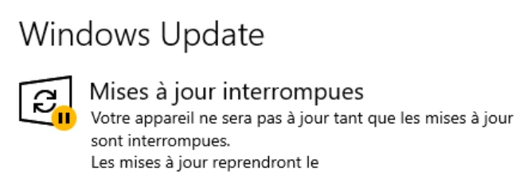
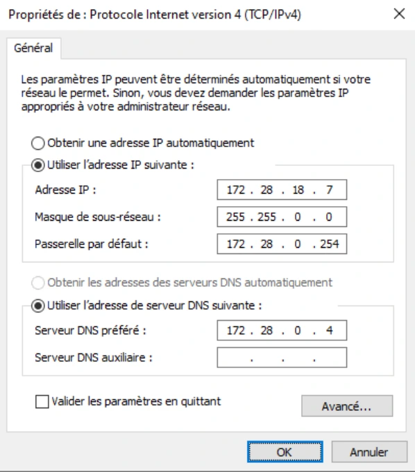
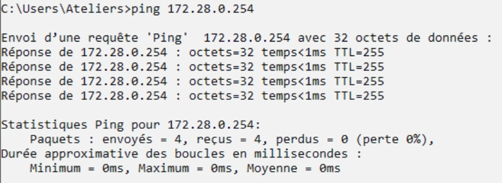
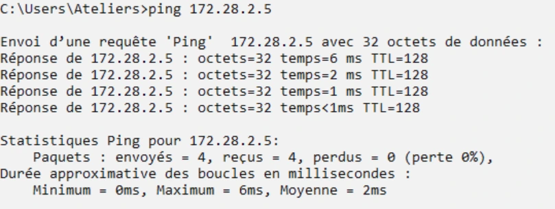
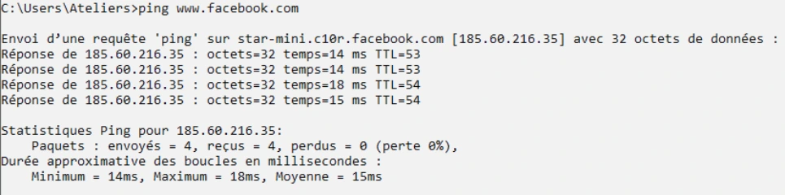
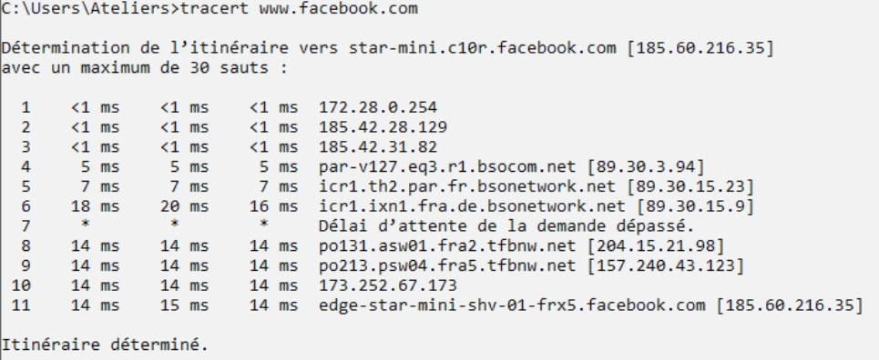

Transcription structurée du document source. Les compléments pédagogiques sont présentés dans l’onglet Cours Optimisé IA.
Sur votre VM Win10-XX, configurez vos accès réseau :
Rechercher > Windows Update > Options avancées de Windows Update
Vérifier le report des mises à jour
Dans le cas contraire, reportez les mises à jour depuis le menu Options avancées
Dans VMware WorkStation > Clic droit sur votre VM Win10-XX > Settings
Network Adapter > cocher Bridged
Ouvrez une fenêtre de ligne de commande cmd.exe
ipconfig (attention, votre adresse IP sera différente de celle de l'encadré ci-dessous).

Ici, l'adresse IP est 172.28.2.5
L'adresse du réseau est 172.28.0.0 (résultat de l'opération du & entre l'adresse IP et le masque de sous-réseau).
o La partie réseau de votre adresse sera la même que celle de votre VM
Campus en ligne
o La partie hôte sera composée du rang alphabétique de la première lettre de
votre prénom puis du rang alphabétique de la première lettre de votre nom de famille
o Le masque sera 255.255.0.0
o La passerelle et le serveur DNS préféré seront les mêmes que ceux configurés
sur votre VM Campus en ligne
Ouvrez une fenêtre de ligne de commande cmd.exe sur l'environnement de travail de l'école
ipconfig /all
Notez les informations concernant la partie réseau, la passerelle par défaut et le serveur DNS préféré.
Transcription textuelle de la capture : le nom de domaine du laboratoire est neutralisé pour ne pas afficher le nom de l’éditeur. Les adresses numériques, commandes, réponses et notions utiles sont conservées.
| Champ de la capture | Valeur |
|---|---|
| Interface | Carte Ethernet Ethernet0 |
| Suffixe DNS propre à la connexion | Domaine Active Directory du laboratoire (nom neutralisé) |
| Adresse IPv6 de liaison locale | fe80::acfb:8349:ce77:6976%10 |
| Adresse IPv4 | 172.28.2.5 |
| Masque de sous-réseau | 255.255.0.0 |
| Passerelle par défaut | 172.28.0.254 |
| Invite de commandes | C:\Users\Ateliers> |
Sur votre VM Win10-XX (faites bien attention de faire les manipulations sur votre VM Win10- XX)
Rechercher > ncpa.cpl
Clic droit sur la carte Ethernet0 > Propriétés
Sélectionnez Protocole Internet version 4 (TCP/IPv4) puis Propriétés
Cochez Utiliser l'adresse IP suivante :
Adresse IP : 172.28.18.7 (attention : ici 18.7 correspond à la partie hôte. 18 pour R et 7 pour G. Votre partie hôte sera donc différente).
Masque de sous-réseau : 255.255.0.0
Passerelle par défaut : 172.28.0.254
Cochez Utiliser l'adresse de serveur DNS suivante
Serveur DNS préféré : 172.28.0.4
OK
Connectivité
o Adresse IP de la passerelle par défaut
o Adresse IP de votre VM Discovery
o www.facebook.com
Sur la VM Win10-XX
Ouvrez une fenêtre de commande cmd.exe

ping 172.28.0.254La VM Win10-XX obtient une réponse ICMP de la passerelle. La VM Win10-XX et la passerelle par défaut communiquent bien.
Pour retrouver l'adresse IP de la VM Discovery, ouvrez une session avec l'utilisateur adm puis ouvrez une fenêtre de ligne de commande cmd.exe
ipconfig
Si l'adresse IP de la VM Discovery est au format APIPA, c'est que la Discovery ne possède pas d'informations IP fournies par le service DHCP. Pour remédier à cela, il faut que la VM Discovery puisse d'abord communiquer avec le serveur DHCP. Pour cela, il faut donc la "brancher" sur le switch "Bridged"
À l'issue de la bascule sur le switch "Bridged", attendez quelques secondes, votre VM obtiendra les informations IP adéquates pour communiquer sur le réseau
Sur la VM Win10-XX
Ping <adresse ip de votre VM Discovery>La VM Win10-XX et Discovery communiquent ensemble sur le même réseau local.
ping www.facebook.com

La communication entre votre VM Win10-XX et ce serveur web est possible grâce au fait que vous avez configuré une passerelle par défaut. Cette passerelle par défaut correspond à une interface réseau du routeur connecté au réseau. Ce routeur vous permet de communiquer avec des hôtes disponibles dans d'autres réseaux et notamment internet.
Cette commande nous apprend que la passerelle par défaut ainsi que la VM Discovery sont joignables directement. La communication est directe, sans que le paquet ne traverse des routeurs, ne passe par différents réseaux.

Transcription textuelle de la capture : le nom de domaine du laboratoire est neutralisé pour ne pas afficher le nom de l’éditeur. Les adresses numériques, commandes, réponses et notions utiles sont conservées.
| Commande | Destination | Maximum de sauts | Saut observé | Trois mesures | Résultat |
|---|---|---|---|---|---|
| tracert 172.28.0.254 | 172.28.0.254 | 30 | 1 : 172.28.0.254 | <1 ms ; <1 ms ; <1 ms | Itinéraire déterminé. |
| tracert 172.28.2.5 | DiscoveryXX, nom DNS du laboratoire neutralisé [172.28.2.5] | 30 | 1 : DiscoveryXX [172.28.2.5] | 3 ms ; <1 ms ; <1 ms | Itinéraire déterminé. |
Les deux commandes sont lancées depuis l’invite C:\Users\Ateliers>. Chaque destination locale est atteinte en un saut dans cette capture.
La commande nous apprend ici que le serveur web de Facebook est joignable et se trouve dans un réseau différent de celui dans lequel se trouve la VM Win10-XX. La communication est donc possible en passant par des routeurs (nous avons même l'information de leur adresse IP et même parfois de leur nom).
La ligne délai de la demande dépassé indique simplement que le routeur en question ne "souhaite pas" communiquer son adresse IP, mais cela ne bouscule ne rien le processus de routage.
Il faut que le paquet traverse 10 routeurs différents (10 sauts) avant d'atteindre la destination finale.
Résolution de noms
o www.hadopi.fr
o www.amendes.gouv.fr
o www.facebook.com
Depuis la VM Win10-XX

Nous obtenons plusieurs informations suite à ces commandes nslookup.
La commande nslookup permet d'obtenir l'adresse IP d'un hôte lorsque nous connaissons son nom. C'est le principe du service DNS. nslookup permet de consulter le service DNS.
Ici, nous pouvons observer que le service DNS est hébergé par l'hôte dont le nom est domaine-du-laboratoire.example et que son adresse IP est 172.28.0.4. C'est justement l'adresse que nous avons renseignée comme serveur DNS préféré dans la configuration de notre carte réseau.
L'adresse IP de l'hôte www.hadopi.fr est 217.115.114.160
L'adresse IP de l'hôte www.amendes.gouv.fr est 90.102.115.80
L'adresse IPv4 l'hôte www.facebook.com est 185.60.216.35. Il possède aussi une adresse IPv6 (2a03:2880:f12d:83:face:booc:0:25de)
www.facebook.com est un alias (un surnom). Son nom d'hôte DNS est en réalité :
star-mini.c10r.facebook.com
Transcription textuelle de la capture : le nom de domaine du laboratoire est neutralisé pour ne pas afficher le nom de l’éditeur. Les adresses numériques, commandes, réponses et notions utiles sont conservées.
Serveur interrogé : DNS du laboratoire (nom neutralisé), adresse 172.28.0.4. Les trois réponses portent la mention « Réponse ne faisant pas autorité » ; les commandes sont lancées depuis C:\Users\rgautier>.
| Commande | Nom retourné | Adresse(s) de la capture | Alias |
|---|---|---|---|
| nslookup www.hadopi.fr | hadopi.fr | 217.115.160.114 | www.hadopi.fr |
| nslookup www.amendes.gouv.fr | www.amendes.gouv.fr | 90.102.115.80 | |
| nslookup www.facebook.com | star-mini.c10r.facebook.com | 2a03:2880:f11c:8083:face:b00c:0:25de ; 185.60.216.35 | www.facebook.com |
Divergence du document : les valeurs de cette capture ne sont pas toujours celles du paragraphe de correction précédent. Le texte indique une autre adresse pour hadopi et une autre écriture IPv6 pour Facebook. Les deux états sont conservés séparément, sans correction silencieuse ni présentation de ces adresses comme valeurs actuelles.
Pare-feu sur W10-XX
Avec la VM Win10-XX
Rechercher > Pare-feu Windows Defender
La VM se trouve sur l'emplacement Réseaux privés, le pare-feu est activé. Si, par mobilité, vous basculez dans un réseau public ou invités, le pare-feu sera activé automatiquement.
La VM n'étant pas jointe à un domaine, aucune indication sur l'emplacement de domaine.
o Autorisez le Bureau à distance uniquement pour le profil privé
Rechercher > Autoriser une application via le Pare-feu Windows
Cocher Bureau à distance pour le profil Privé
Dans la console Pare-feu et fonctions avancées de sécurité, utilisez la règle prédéfinie vous permettant d’autoriser le ping entre vos postes client.
Rechercher > Pare-feu Windows Defender avec fonctions avancées de sécurité
Sélectionner Règles de trafic entrant
Clic droit sur Partage de fichiers et d'imprimantes (Demande d'écho – Trafic entrant ICMPv4) Activer la règle
Il y a deux lignes qui portent le même intitulé, activez celle dont le profil correspond à Privé, Public
Pour s'assurer du bon fonctionnement, faites un ping depuis la VM Discovery vers votre VM Win10-XX, la communication doit être maintenant possible.